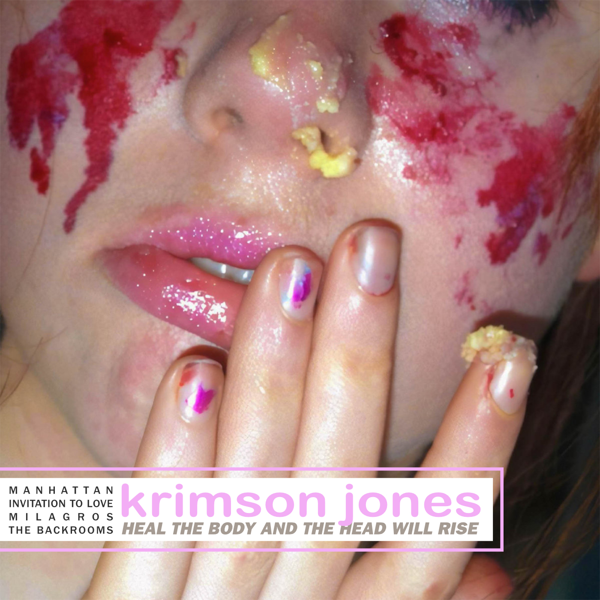

2024
|
Tonight: Krimson Jones
An intimate take on honesty. |
2023
 |
Fine America
Alternative rock powered by stock plugins. |
 |
Krimson by Jones
Greatest hits. |
|
RISE: THE FORBIDDEN ADULATIONS
Mechanical bitrates of the uncompressed self. |
|
|
RISE
Bedroom pop turned avant-garde electronica. |
2022
 |
At The Expense Of Others
Live guitars for a quiet take on distortion. |
|
Nueva poesía
Elevated trap beats and intellectual tempos. |
|
|
Me verás volver
Digital playgrounds on slow internet. |
|
|
Onomatopeia/Tokio
Love songs about raw wondering. |
|
|
Broken Minister, Inc.
Evaluations on morality. |
2021
|
noji mena
Spin-off to derangement. |
|
|
Shlatcom
Impromptu poetry on acoustics and piano. |
|
|
QuaaludeQuantago
Pop anthems about early paranoia. |
2020
 |
Unisex Backrooms
Unhealthy thrills of a newfound fortune. |
|
Leviathan Industries FM
Ode to failing states. |
|
|  |
HEAL THE BODY AND THE HEAD WILL RISE
Obsessions replacing despair. |
2018
|
The Human Plant
A deep dive into the upper principles of evil. |
|
|
Unisex Bathrooms
The eternal American debut by Krimson Jones. |